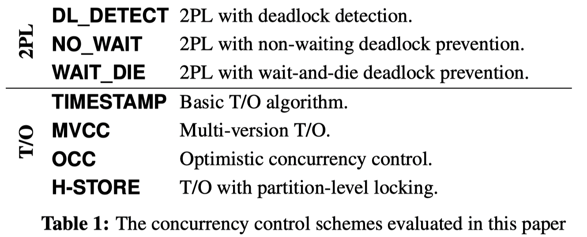

Distributed Transactions and Databases¶
Version History
| Date | Description |
|---|---|
| Apr 5, 2022 | Reorg |
| Feb 25, 2022 | Initial |

Why I started this note¶
This note was originally written in this google doc. This note was my attempt to revive the distributed transaction topic and to get a better understanding about database systems in general. The result was quite fruitful, I covered various concurrency control schemes, isolation levels, etc. The consensus protocols, query optimizations etc topics are not extensively discussed here.
Today 02/16/2022, I’m reading the FORD, FAST’22 paper, they are designing distributed transactions for disaggregated persistent memory, they talked about OCC, 2PL, primary-backup etc schemes, and I decided to take another serious look at this topic. I still have the vivid memory of me reading some old Transaction-related surveys (after the ZooKeeper paper) in a small, smelly, broken Purdue ECE room when I first started my PhD. I also had a vivid memory of a meeting among myself, Yiying, Stanko, Marcus in a VMR office room. We were talking about OCC, MVCC, and the then upcoming OSDI’18 hybrid transaction paper. I was confused. Anyways, let’s get started.
Quick Takeaways¶
(1) Concurrency control (CC) is categorized as two types: pessimistic CC using 2-phase locking (2PL) and optimistic CC using Timestamp-Ordering (T/O).. This categorization is derived from a classical paper (Concurrency Control in Distributed Database Systems, 1981). This image comes from An Evaluation of Concurrency Control with One Thousand Cores, VLDB’14. Note, I think the MVCC actually should be MVTO. 
(2) Multi-versioning (MV) is the prevalent default implementation choice in the wild, for its better performance on various scenarios.
Most people think MV is a CC mechanism, but it is not.
MV must work with a CC mechanism (e.g., 2PL, T/O) to become a full solution,
resulting in combos such as MVTO, MVOCC, MV2PL.
In my opinion, the commonly mentioned MVCC in various literatures actually
refers to MVTO, i.e., multi-versioning with timestamp-ordering
(see the MVCC section below for more details).
This image shows the commercial/research use of MVCC DBMS. Credit: An Empirical Evaluation of In-Memory Multi-Version Concurrency Control, VLDB‘17

(3) For better performance, DBMS usually adopt Snapshot Isolation or Read Committed as their default isolation level.
The Serializable isolation level is usually not the default one in commercial DBMS.
It is baffling to know the fact that many real world systems are actually operating under a weak consistency model
and we (and the world) are okay with it!
The RedBook offers an interesting take on this topic.
The market follows Gresham’s law: bad money drives out good money
(See the Isolation section for more details).
This image shows the default Isolation level used by various systems. Credit: Highly Available Transactions: Virtues and Limitations, VLDB‘13

Concepts¶
Concurrency Control¶
Pessimistic Concurrency Control & Optimistic Concurrency Control.
Must Read
- Concurrency Control in Distributed Database Systems, 1981. This paper categorizes 2PL, MVCC, OCC etc into 2 big types.
- On Optimistic Methods for Concurrency Control, 1981. This is the first OCC paper.
- An Evaluation of Concurrency Control with One Thousand Cores, VLDB’14. This CMU paper has follows the 1981 paper’s categorization on CC methods.
- An Evaluation of Distributed Concurrency Control, VLDB’17
- An Empirical Evaluation of In-Memory Multi-Version Concurrency Control, VLDB’17. This paper is a must read, it explains what is MVTO, MV2PL, MVOCC, etc.
- Optional Aurogon: Taming Aborts in All Phases for Distributed In-Memory Transactions, FAST‘22
- Optional FORD, FAST‘22
Courses
- CMU Database Systems (15-445/645) , thanks to Andy Pavlo
- CMU Advanced Database Systems (15-721) , thanks to Andy Pavlo
As we mentioned earlier, database concurrency control is categorized as two types: pessimistic CC using 2-phase locking (2PL) and optimistic CC using Timestamp-Ordering (T/O). This categorization is derived from this classical paper Concurrency Control in Distributed Database Systems. The following table is from An Evaluation of Concurrency Control with One Thousand Cores, VLDB’14.
Also from this CMU 15-445 slide :

Recap:
- Pessimistic CC: Two-phase Locking (2PL)
- Optimistic CC: Timestamp Ordering (T/O)
- TO
- OCC
- MVCC-TO
The well-known OCC, MVCC-TO concepts fall into the T/O category.
However, don’t confuse the MVCC with concurrency control.
MVCC is not a concurrency control method.
It must work with a CC method.
The above table has MVCC under T/O because it is MVCC-T/O.
(Old note: After reading the VLDB’17 paper, I think that MVCC can NOT be categorized as a standalone concurrency control method. Hence, we should not say MVCC, OCC, 2PL as if they are in the same league. MVCC states multiple versions of the same object/tuple, it needs to work with other concurrency control methods, so as to end up with MVTO, MVOCC, MV2PL. I think the most common one, or the one that people unconsciously talk about is MVTO. See the following MVCC section for more details!)
Call back to Hotpot: I think its MRSW is 2PL+2PC, MRMW is OCC+2PC.
Pessimistic CC: 2PL¶
Not too much to explain here. Maybe read the MV2PL paper for the MV + 2PL combo.
Optimistic CC: T/O¶
The essense of T/O, as its name suggested, is using timestamp to order operations and transactions. Image there exist a perfect logical clock available to all distributed nodes. Whenever a node wants to run a transaction, it will take a timestamp based on the global clock. The node further attaches this timestamp to all operations within the transaction it wishes to execute. This practice establishes a global order on all transactions. Conflicts therefore can be resolved using timestamps.
The above reasoning is a super high-level gist on how a T/O based CC could work. There are many nuances and implementation choices to be made. First of all, there is no such perfect clock among distributed nodes. Even if there is a centralize time management system, the cost will be super high. Because it has high-concurrency issues. Second, a system can order things in the beginning of a transaction, or in the middle, or in the end (OCC). Third, there might a single version, or multiple versions of the same data. Combined, they lead to several popular subcategories listed below.
- Basic Timestamp-Ordering (Basic T/O)
- Optimistic Concurrency Control (OCC)
- Multi-version Concurrency Control (MVCC) with T/O
Quote the VLDB‘14 paper:
Timestamp ordering (T/O) concurrency control schemes generate a serialization order of transactions a priori and then the DBMS enforces this order. A transaction is assigned a unique, monotonically increasing timestamp before it is executed; this timestamp is used by the DBMS to process conflicting operations in the proper order (e.g., read and write operations on the same element, or two separate write operations on the same element).
As for their detailed implementation rationale, I recommend reading An Evaluation of Concurrency Control with One Thousand Cores, VLDB’14, CMU 15-445 slide .
Multi-Versioning¶
Papers
- https://15721.courses.cs.cmu.edu/spring2020/schedule.html. This course has links to various MVCC papers
- An Empirical Evaluation of In-Memory Multi-Version Concurrency Control, VLDB’17
- Serializable Snapshot Isolation in PostgreSQL, VLDB’12
- Scalable Garbage Collection for In-Memory MVCC Systems, VLDB’17
After a couple days of intensive reading, my understanding about MVCC has expanded quite a lot. It kind of went like this:
- In the first stage, I would list MVCC as the opposite approach to OCC. And appears this is most people’s impression? Meaning, when we talk about a system, we will describe it either as OCC or MVCC, as if they are two different things that cannot co-exist.
- After reading Peloton, VLDB’17 paper and the Alibaba blog post, I realized that my understanding wasn’t correct. They reminded me that OCC, at its core, is a concurrency control method, with a clear goal of reducing the amount of time that a transaction holds locks. Since the original and most OCC implementations are using a single-versioned database plus local copies, we naturally think OCC ⇒ single version. However, if we recall the core of OCC, it does not preclude multi-versioning!. OCC can work with MVCC.
- My misconception also applies to MVCC, not just OCC. Like the alibaba blog post said, MVCC alone is not a concurrency control method, it merely says there will be multiple versions of the same object/tuple. As a result, MVCC has to work with a real concurrency control method to become a full solution.
That’s why we have MVCC+TO, MVCC+2PL, MVCC+OCC.
MVCC is an optimization technique for read and write requests. It does not completely solve the concurrency problem of databases, so it must be used with concurrency control techniques for a complete concurrency control. E.g., multiversion two-phase locking (MV2PL), multiversion timestamp ordering (MVTO), multiversion optimistic concurrency control (MVOCC), and MV-SSI.
I highly recommend the An Empirical Evaluation of In-Memory Multi-Version Concurrency Control, VLDB’17 paper for a better understanding about MVTO, MVOCC, MV2PL, and how to implement them.
This image is from this Alibaba Blog . It is inline with what the above VLDB’17 paper said.

It is important to note that MVCC is the de-facto choice for modern DBMS for its better performance regarding read/write transactions.

Isolation: Serializability, Snapshot Isolation, Linearliability¶
Some official Isolation levels in DBMS systems:
- Serializable
- Repeatable reads
- Read committed
- Read uncommitted
Readings:
- The RedBook Chapter 6 has great discussion on why weak consistency (e.g., non-serializable snapshot isolation) is more popular than the serializability, and their guess on why the world is “okay” with that usage.
- A Critique of ANSI SQL Isolation Levels, 1995
- Database Isolation Levels explained | by sudan
- Real Transactions are Serializable
- CockroachDB provides strong (“SERIALIZABLE”) isolation by default to ensure that your application always sees the data it expects.
- When you use a non-SERIALIZABLE isolation level, you’re giving the database permission to return an incorrect answer in the hope that it will be faster than producing the correct one.
- Oracle’s implementation of the SERIALIZABLE isolation level is actually a weaker mode called “snapshot isolation”: It is stronger than READ COMMITTED but weaker than SERIALIZABLE. It is similar to REPEATABLE READ but not exactly equivalent
- PostgreSQL: Documentation: 14: 13.2. Transaction Isolation
- Highly Available Transactions: Virtues and Limitations, VLDB’17
- Discussed the default isolation models used by various systems. Quite telling
- Most systems DO NOT have Serializable as the default.

Takeaways
- Many real-world DBMS and NoSQL systems adopt a weak consistency model (e.g., non-serializable snapshot isolation) as the default isolation level. They prefer this over serializability because a weak consistency model offers better performance.
- Weak consistency could lead to anomalies that are super hard to reason about. So why is the real world okay using this model? The redbook’s guess is that there is not enough concurrency in the real world workload so that corner cases rarely happen. I don’t really buy this argument but I can’t think of another good reason.
-
None of these weak isolation models guarantees serializability, but, as we see below, their benefits are often considered to outweigh costs of possible consistency anomalies that might arise from their use.
The reason I came across this is because I was trying to understand Snapshot Isolation while reading NAM-DB (it provides SI). And turns out it is a much deeper discussion.
This wiki Snapshot Isolation has a great explanation on what SI exactly is, and how it compares to the strict serializability. * The following note was written before I read the SI wiki: I have a very vague understanding about read-snapshots. My first thought is that it is probably only possible with MVCC, but not with OCC. Because intuitively, MVCC maintains multiple versions of the same object, hence able to provide a snapshot with respect to time. Spanner uses MVCC (2PL+2PC+Paxos) and has snapshots-related APIs. FaRMv1, DrTM uses OCC and has no snapshots. * After reading the SI wiki: I think my first impression is correct. MVCC is convenient to implement Snapshot Isolation, as MVCC already maintains a series of recent history. However, I’m not 100% sure whether we can implement SI with OCC as well. We definitely need extra states on top of a normal OCC, and will that just result in sth like MVCC? * **Snapshot Isolation essentially allows****disjoint writes****from concurrent transactions, hence could result in a final state that is not possible in a Serialiable transaction.**Check the example case in the wiki, it is great and simple. * System wise, I came across these that provide SI * Spanner - provide both serializable and (read-only) snapshot transactions * NAM-DB, VLDB’17 - provides SI-only transactions
Serializable Snapshot Isolation (SI) Serializable Snapshot Isolation (SSI)
Replication Protocols¶
Paxos Vertical Paxos Raft Primary-Backup Virtual Synchrony
TODO: come back and add more.
Integrate Distributed Transaction and Replication¶
 (image from TAPIR, SOSP’15)
(image from TAPIR, SOSP’15)
I think most traditional DBMS systems implement distributed transactions and replication *protocols as two different things. For example, the dist-xact could be sth like 2PL+2PC, OCC+2PC, MVOCC+2PC. Beneath, the replication protocol could be Primary-Backup replication, Paxos, or Raft.
For Google Spanner,
(1) I think their distributed transaction is
multi-versioned 2-phase locking with distributed 2-phase commit (i.e., MV2PL+2PC).
(2) Beneath, Spanner uses Paxos for data replication. The metadata is stored in GFS.
In their design, a set of machines form a Paxos group.
Each paxos group has a leader. During a transaction, this leader is the transaction manager for its Paxos group.
If a distributed transaction spans multiple Paxos groups, all group leaders would run MV2PL+2PC among them;
leaders themselves run Paxos protocol within their own Paxos group.
This layering is good for modularization but at the cost of more data/messages exchanged. But Spanner is a geo-distributed database, such design might be okay. It is not like it is building on top of RDMA or something.
The takeway message is that: The naive way of layering a distributed transaction protocol on top of a replication protocol results in over-coordination.
It is only natural to co-design dist-xact and replication. For instance, FaRM, SOSP’15 & FORD, FAST‘22 both describe a co-designed four-phase protocol (lock, validation, commit-backup, commit-primary).
Related work in this space
- **Hotpot, SoCC’17**co-designs distributed transaction and replication in its MRSW and MRMW protocols (which are 2PL+2PC, and OCC+2PC, respectively)
- FaRMv1, SOSP’15 & NSDI’14 co-designs distributed transaction and replication in one 4-phase protocol, using RDMA
- FaRMv2, SIGMOD’19
- TAPIR, SOSP’15
- FORD: Fast One-sided RDMA-based Distributed Transactions for Disaggregated Persistent Memory, FAST‘22
- Papers from Mu Shuai
2-Phase Commit v.s. 2PL¶
The two-phase commit (2PC) protocol should not be confused with the two-phase locking (2PL) protocol, a concurrency control protocol.
[NOTE: the description about OCC, MVCC, 2PL might be wrong. I had the wrong impression about them. But now I understand after reading the VLDB’17 paper. I believe the MVCC below can be thought of as MVCC-TO, or MVTO.]
CC methods such as 2PL, T/O(OCC, MVCC-TO, T/O) are used to ensure that concurrent operations to shared data are serialized, hence ensuring serializability and data consistency. CC ensures operations such as read and write are ordered properly. CC can be used both within a single node or across nodes (e.g., the An Evaluation of Concurrency Control with One Thousand Cores, VLDB’04 paper evaluates several CC methods within a single node).
However, a simple CC is not sufficient when it comes to a distributed setting with multiple nodes:
it cannot ensure a transaction commit could commit at all participating nodes.
For instance, some nodes may have committed, others may have not - and this creates an inconsistent state.
Let me use 2PL as an example: in 2PL, we first grab all locks across all involving nodes, we then run the execution/logic locally on a node, we then send all the new data (if any) to other nodes and release the locks.
In the last step, there is no way for us to make sure that all participating nodes have received the message.
If only some of them finalized/committed the transaction, then the whole database/system is in an inconsistent state.
This is where Atomic Commit Protocol such as 2-phase commit comes to rescue. It ensures that all participants either all commit or none of them commits the transaction. It does so by using another 2-phase protocol: prepare + commit. It is not hard to understand. There are more complicated methods such as 3PC or Paxos Commit.
I think my original confusion about 2PC and 2PL stems from my illusion that we can use 2PL to also implement what 2PC is designed to achieve. But after the above reasoning, I realized that is not possible. 2PC and 2PL have very clear distinctions. I also had a misconception that 2PC is needed because it can ensure durability. This is also false because 2PC is required simply to ensure atomic commit, for both scenarios w/ or w/o guarantees. If we want durability, then 2PC’s participants would need to either do local logging or build on top of a replication mechanism such as Paxos.
A short summary:
- Concurrency control protocols: 2PL, T/O (OCC, MVCC, etc)
- Atomic commit protocols 2PC, 2PC, paxos-commit
- Concurrency control methods can work in a single node or across node
- Once a CC goes distributed, it requires a atomic commit to ensure distributed consistency
- 2PL + 2PC, OCC + 2PC, MVCC + 2PC etc are concurrency control + atomic commit
- Atomic commit can include or exclude durability guarantee
Classical Systems¶
These systems of course touch most of the above concepts.
- ZooKeeper. The key thing is its Atomic Broadcast network library.
- Google BigTable, need a revisit
- Google Spanner. I have vivid memory reading it. TruTime. Need a revisit as well. It touches a lot of things, appears it is MVCC? And uses Paxos.
Misc¶
Scenarios and Hardware¶
One key thing worth considering is the operating environment. Some systems like Spanner target geo-distributed data centers, which could go though low-latency WAN.
Bottlenecks¶
Many papers and systems have mentioned that the global timestamp allocation is a major bottleneck in Timestamp Ordering concurrency control systems (including OCC and MVCC). This is easy to understand: having some sort of global data structure that increases monotonically is hard in a distributed setting. I think that’s why several systems (Spanner, FaRMv2) resort to proactively dealing with clock uncertainties.
In-memory v.s. Disk-base DBMS¶
XXX
Self-Driving DBMS¶
Essentially uses ML to make some decisions?
Readings:
- Self-Driving Database Management Systems , CIDR’17
- Automatic Database Management System Tuning Through Large-scale Machine Learning
Papers and Readings¶
Courses
- Schedule | CMU 15-445/645 :: Intro to Database Systems (Fall 2019). This is DBMS basics, good start.
- Schedule - CMU 15-721 :: Advanced Database Systems (Spring 2020). This is advanced paper reading.
General Readings
- 01 Papers - ALL - a TAB is dedicated to this topic
- Zotero Paper Collection
- http://www.redbook.io/ The famous Red Book
- theanalyst/awesome-distributed-systems - Github Awesome List
- Distributed Systems Reading List - Reading List
Good Readings
- Time, Clocks, and the Ordering of Events in a Distributed System, 1978 - classical
- On Optimistic Methods for Concurrency Control, 1981
- First paper proposing OCC, definitely a seminal paper.
- Concurrency Control in Distributed Database Systems , 1981
- This paper categorizes 2PL, MVCC, OCC etc into 2 big types.
- The CMU slides/papers use this categorization to this date.
- Linearizability: a correctness condition for concurrent objects , 1990
- An Evaluation of Concurrency Control with One Thousand Cores, VLDB’14
- A good read on comparing various concurrency control schemes.
- Note that the MVCC mentioned in this paper is MVTO.
- An Empirical Evaluation of In-Memory Multi-Version Concurrency Control, VLDB’17
- This is a really good read and should be read in great detail.
- Understand that OCC’s core is to reduce the critical section time. And MVCC is not a concurrency control method on its own, it merely enables multiple versions of the same object/tuple. Hence MVCC could work with any concurrency control methods, resulting in combos like MVTO, MVOCC, MV2PL.
- An Evaluation of Distributed Concurrency Control, VLDB’17
- This read reminds us the default Isolation level out in the wild is usually not serializability, but something weaker like Snapshot Isolation, or Read Committed.
Misc¶
The Marzullo’s Algorithm, used by Google Spanner. https://en.wikipedia.org/wiki/Marzullo%27s_algorithm
Opacity, from FaRMv2
What’s Really New with NewSQL? What’s Really New with NewSQL?
Thoughts on Future Work¶
Database is a long-standing area with tons of papers published every year. There is never lack of innovation in this area. The challenges usually stem from the use of new hardware, networking, and use cases.
Based on the recent trends, I think the following directions interest me. Some of them have been explored already or being explored.
- Database with high speed network such as RDMA. The use of RDMA challenges the transaction design, the replication protocol design, and so on. It bascially calls for a system re-design. Systems such as FaRM, HERD, FORD, pDPM and so on have explored this area quite extensively. But I always feel there is more to explore here. For instance, explore the data structure designs.
- Database on disaggregation and progrmmable networking hardware. Qizhen has done some amazing work in this space. But hs work is limited to a certain design choices. Besides, we should bring in programmable networking hardware such as p4 switch, NIC, etc. Can we break down a database into small code pieces and then run them on top of a set of small devices.